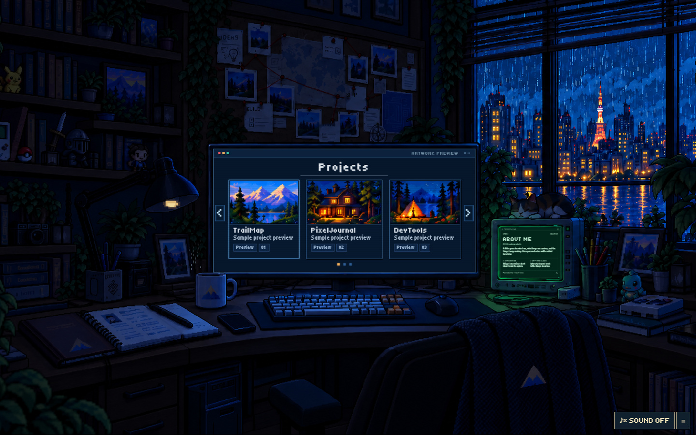
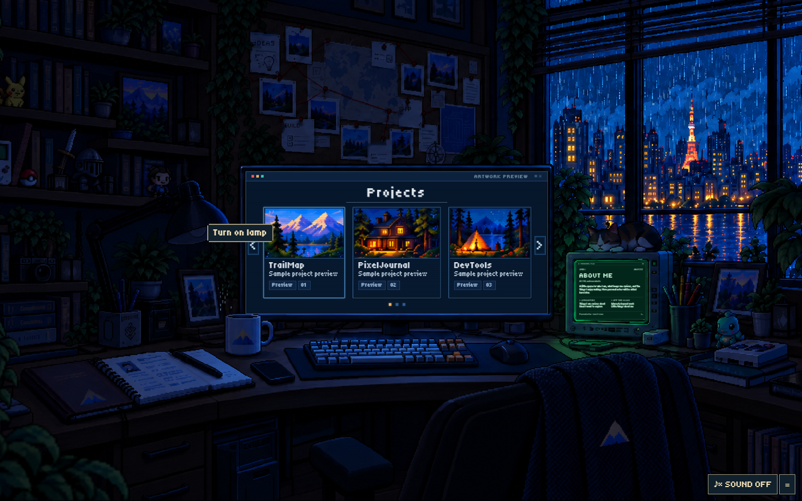
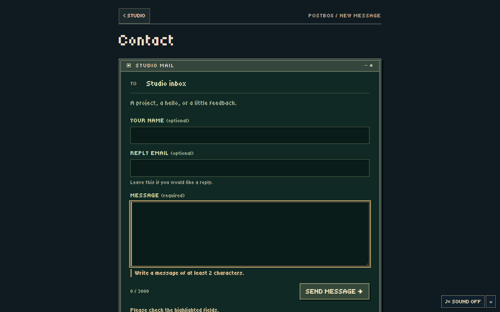
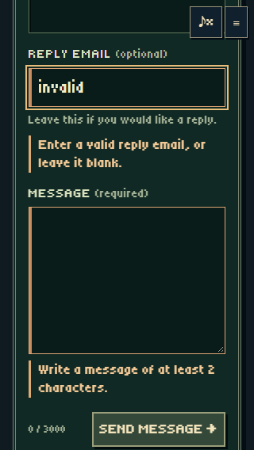

The mix has more headroom. Start around the middle of the sliders and adjust for your speakers. Sound remains opt-in.
Indoor rain, a purr, then Projects entry and return. Recorded from the actual browser audio graph.
The earlier, quieter rain/purr preview for comparison.
Normal ambient playback continues. The bulb hint never switches on the room and ends on hover, focus or activation. Reduced motion uses a steady faint bulb cue.


Reply email remains optional. Invalid fields are labelled below their inputs, with focus on the first invalid field. These previews sent no message.

